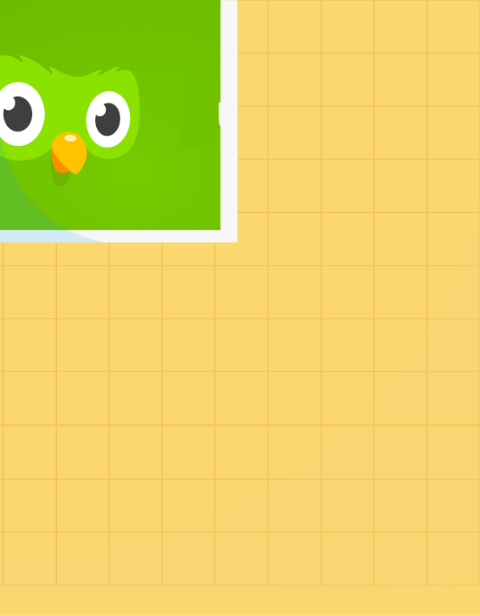

As someone who grew up learning several different languages at once, I've always loved applications and platforms geared towards learning languages.
I actually began using Duolingo back when I was in seventh grade (yikes!), and it's incredible to see how far the company and product have come since then!
As a tribute to a product that I genuinely enjoy, I identified one area which I thought Duolingo could improve in, and took on both product manager and designer hats to address the issue. The final products included:
I figured that the best way to begin looking for ways to improve Duolingo would be by checking to see what Duolingo users have historically liked and disliked. Some useful resources I found were the Duolingo subReddit and Duolingo Discussions center.
Based on the research that I did, it was evident that - by all indicators - Duolingo is doing well; the number of users has increased, the number of types of users has increased, and the sheer amount of language courses offered on the platform is also significantly more than what it was several years ago. That being said (and as Luis himself has been quoted saying in many interviews), it's the number of daily active users there are, their engagement with Duolingo, and the amount of time they're spending that actually counts.
From there, I decided that my problem would be a pretty broad - but extremely important one: how can we increase engagement on Duolingo?
In design, there's a lot of emphasis on placing things "above the fold". A quick analysis of what was "above the fold" for Duolingo and what was "below the fold" on web showed the following:
In a nutshell, a lot of the modules that encourage users to engage in Duolingo (i.e. the strengthen skills button and the leadership board) aren't even visible when a user first loads the homepage. Additionally, because a user's most recently learned skill is always located at the very bottom of the long vertical homepage, it seems that the probability that a user will scroll quickly to the bottom of their screen - and thus miss the button and the module - is pretty high.
To validate that my hypothesis was correct, I did an informal survey of some of my friends who I know use Duolingo. Their responses to my two questions were below:
After more design feedback, brainstorming, bad mockups, and iterations, I finally came to a new feature proposal that I believed would increase user engagement and the daily amount of time a user spent on each of her languages. I call it the Duolingo Homepage 2.0!
One of the biggest advantages to the current Duolingo homepage is, in my opinion, the modularity of it all. For the user, there's a clear plus with regards to being able to compartmentalize information and find everything that you need. On the engineering and product side, modularity makes it easy to break down tasks and try new things one at a time.
My redesign attempts to preserve that modularity while still accounting for the "above the fold" mantra, essentially creating what looks like a dashboard for the gaming Duolingo user:
Whereas before it took a lot of user effort to parse information when they were trying to locate specific course modules and skill sets, finding an old skill is now as easy as typing into the search bar and filtering down your results. In addition to the easier usabillity, I imagine this will increase user engagement with past skills and words that they have already learned.
I also redesigned the leadership board to be more visually demonstrative of a user's progress relative to his or her friends:
Finally, I decided to examine the advantages of the Homepage 2.0 and compare them to the current homepage and its strengths: